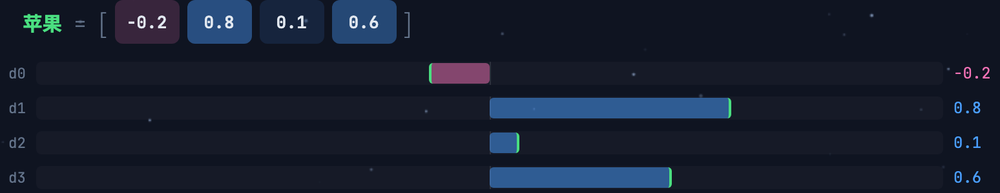
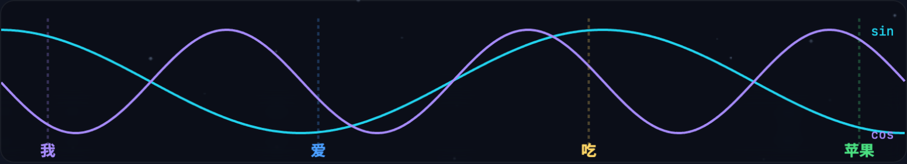
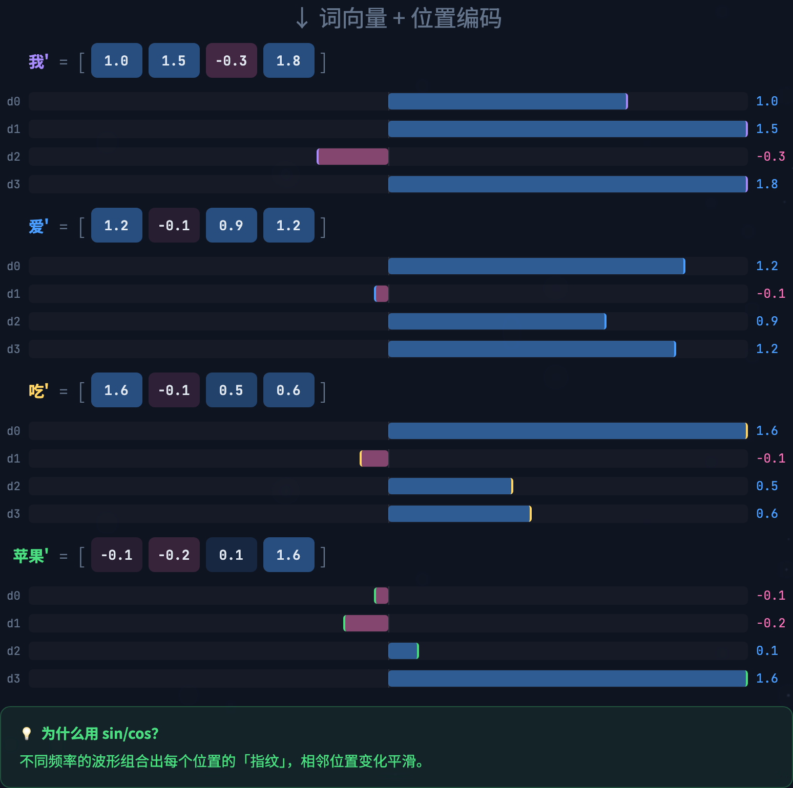
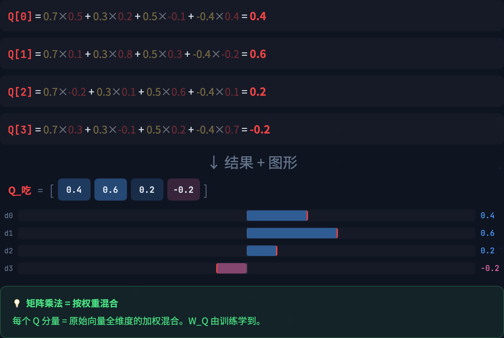
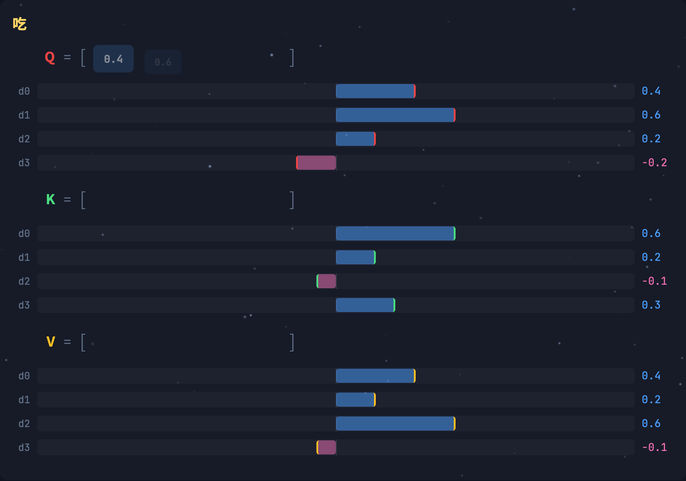
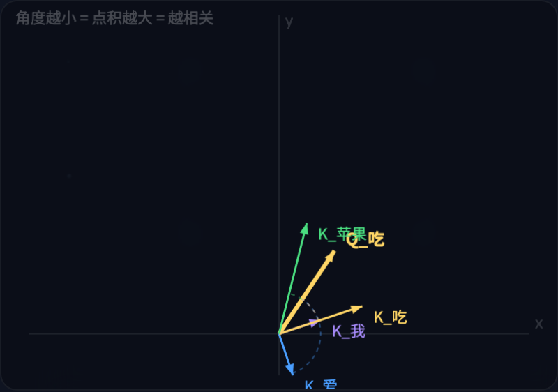
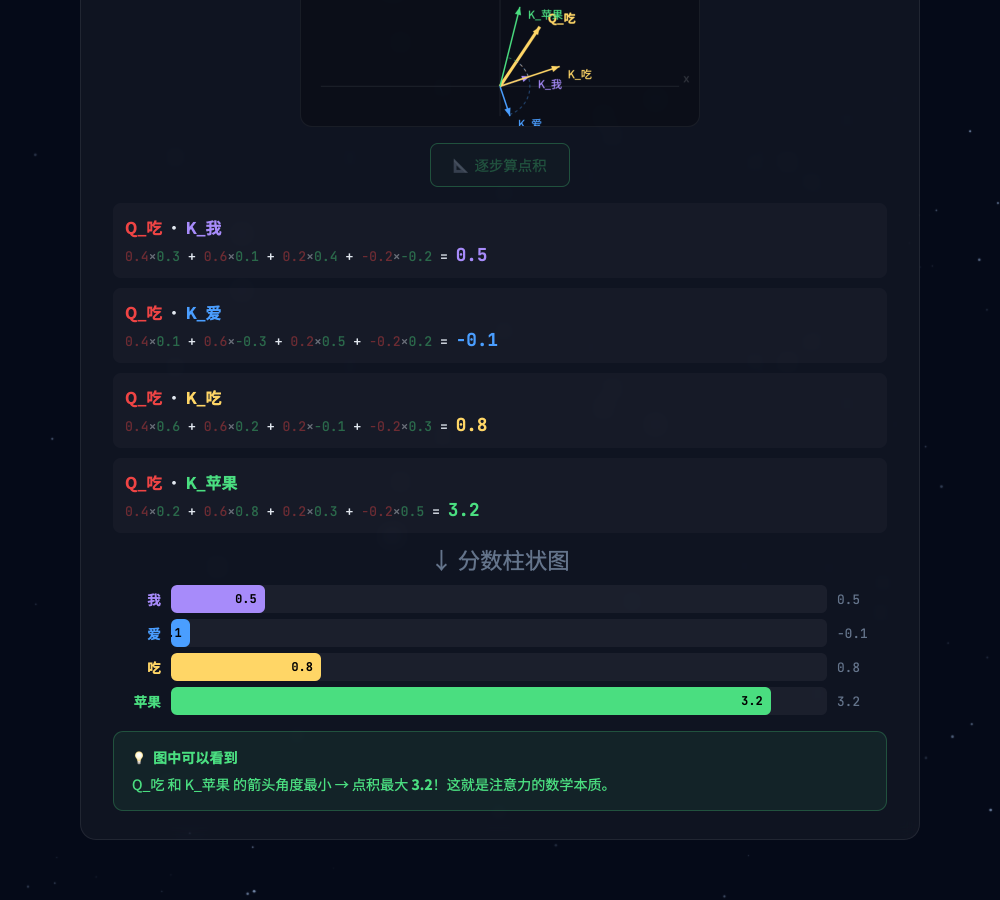
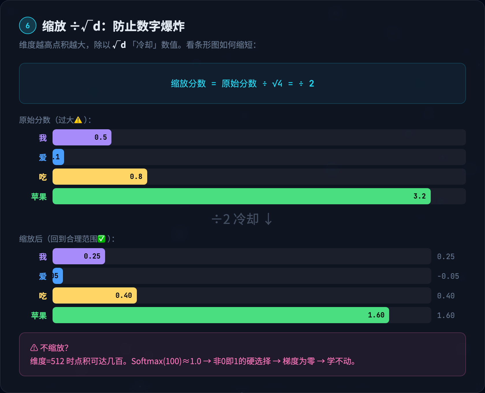
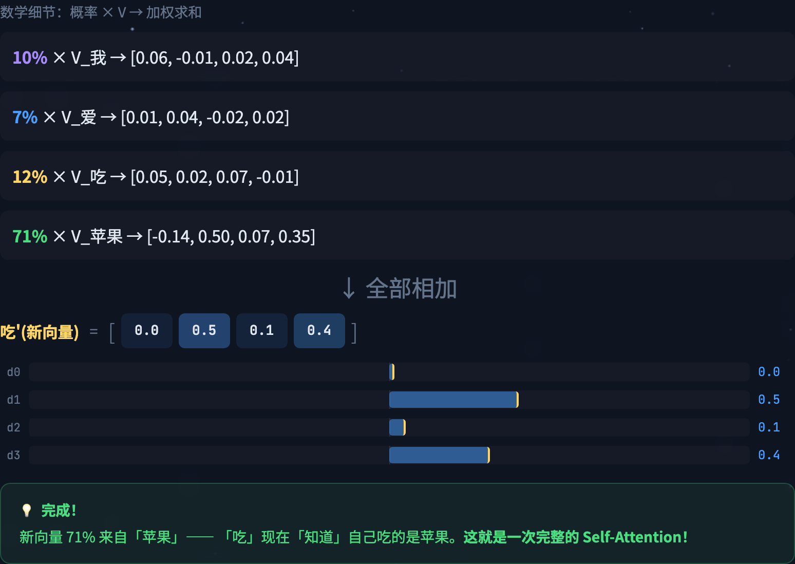
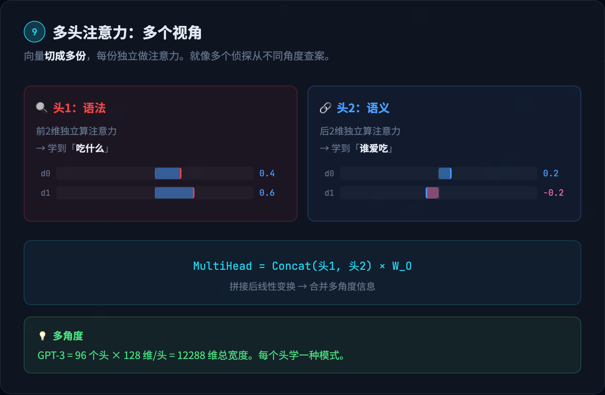

10 步手算全拆解 · 数字+图形双管齐下
准备好了吗？让我们开始。

第一步是把每个词变成一个 4 维向量。这是通过查嵌入矩阵（Embedding Matrix）实现的——一张巨大的查找表，每个词对应表中的一行。
我们的四个词被映射为：
| 词 | d0 | d1 | d2 | d3 |
|---|---|---|---|---|
| 我 | 1.0 | 0.5 | -0.3 | 0.8 |
| 爱 | 0.4 | -0.6 | 0.9 | 0.2 |
| 吃 | 0.7 | 0.3 | 0.5 | -0.4 |
| 苹果 | -0.2 | 0.8 | 0.1 | 0.6 |
每个数字代表这个词在某个语义维度上的特征。正值和负值的含义是由训练自动学到的，人类无法精确解读，但可以类比理解：


Self-Attention 有一个天生的缺陷：它在计算 Q·K 时，对词的顺序完全不敏感。「我爱吃苹果」和「苹果吃爱我」在纯注意力看来没有区别——因为 Q·K 点积只看向量方向，不看位置。
解决方案是位置编码（Positional Encoding）：用 sin 和 cos 函数为每个位置生成一个独特的信号，然后加到词向量上。
位置 0（「我」）的编码是 [0.00, 1.00, 0.00, 1.00]，位置 1（「爱」）的编码是 [0.84, 0.54, 0.01, 1.00]——每个位置都不同，而且相邻位置变化平滑。
加到词向量上之后：

有了带位置信息的词向量，下一步是生成 Query。具体方法是把词向量乘以一个权重矩阵 W_Q。
以「吃」为例，它的 Query 向量是这样算出来的：
在交互动画中，你可以看到每个分量的逐步计算过程：
| 分量 | 计算过程 | 结果 |
|---|---|---|
| Q[0] | 0.7×0.5 + 0.3×0.2 + 0.5×(-0.1) + (-0.4)×0.4 | 0.4 |
| Q[1] | 0.7×0.1 + 0.3×0.8 + 0.5×0.3 + (-0.4)×(-0.2) | 0.6 |
| Q[2] | 0.7×(-0.2) + 0.3×0.1 + 0.5×0.6 + (-0.4)×0.1 | 0.2 |
| Q[3] | 0.7×0.3 + 0.3×(-0.1) + 0.5×0.2 + (-0.4)×0.7 | -0.2 |
最终得到 Q_吃 = [0.4, 0.6, 0.2, -0.2]

用同样的方法，每个词还要乘以 W_K 生成 Key，乘以 W_V 生成 Value。三个矩阵 W_Q、W_K、W_V 是三个独立的权重矩阵，各自学到不同的变换。
四个词的完整 Q/K/V 如下：
| 词 | Q | K | V |
|---|---|---|---|
| 我 | [0.5, 0.2, -0.1, 0.6] | [0.3, 0.1, 0.4, -0.2] | [0.6, -0.1, 0.2, 0.4] |
| 爱 | [0.3, -0.4, 0.8, 0.1] | [0.1, -0.3, 0.5, 0.2] | [0.1, 0.5, -0.3, 0.3] |
| 吃 | [0.4, 0.6, 0.2, -0.2] | [0.6, 0.2, -0.1, 0.3] | [0.4, 0.2, 0.6, -0.1] |
| 苹果 | [-0.1, 0.7, 0.3, 0.4] | [0.2, 0.8, 0.3, 0.5] | [-0.2, 0.7, 0.1, 0.5] |
在交互动画中，你可以看到同一个词的 Q/K/V 条形图方向各不相同——这非常关键。它意味着同一个词在不同角色下展现不同的「面貌」：Q 决定它要找什么，K 决定它的身份标签，V 决定它能提供的内容。


现在进入最关键的一步：计算「吃」和每个词之间的相似度。
方法是点积（Dot Product）：把「吃」的 Q 和每个词的 K 对应维度相乘再求和。
| 配对 | 逐位相乘 | 求和 |
|---|---|---|
| Q_吃 · K_我 | 0.4×0.3 + 0.6×0.1 + 0.2×0.4 + (-0.2)×(-0.2) | 0.5 |
| Q_吃 · K_爱 | 0.4×0.1 + 0.6×(-0.3) + 0.2×0.5 + (-0.2)×0.2 | -0.1 |
| Q_吃 · K_吃 | 0.4×0.6 + 0.6×0.2 + 0.2×(-0.1) + (-0.2)×0.3 | 0.8 |
| Q_吃 · K_苹果 | 0.4×0.2 + 0.6×0.8 + 0.2×0.3 + (-0.2)×0.5 | 3.2 |
结果一目了然：「苹果」的分数 3.2 远远高于其他词！

原始的点积分数有一个隐患：随着向量维度增大，点积的数值会线性增长。如果维度是 512，点积可能达到几百甚至几千。
这会导致什么问题？后面要做 Softmax（把分数变成概率），而 Softmax 对大数值极其敏感。如果输入是 [0.5, -0.1, 0.8, 100]，Softmax 的输出会变成 [~0, ~0, ~0, ~1]——几乎是非 0 即 1 的「硬选择」，梯度趋近于零，模型学不动。
解决方案非常优雅——除以维度的平方根：
| 词 | 原始分数 | ÷ √4 = ÷ 2 | 缩放后 |
|---|---|---|---|
| 我 | 0.5 | 0.5 ÷ 2 | 0.25 |
| 爱 | -0.1 | -0.1 ÷ 2 | -0.05 |
| 吃 | 0.8 | 0.8 ÷ 2 | 0.40 |
| 苹果 | 3.2 | 3.2 ÷ 2 | 1.60 |
Softmax 是一个将任意实数转化为概率分布的函数。它的公式是：
| 词 | 缩放分数 | e^x | 概率 |
|---|---|---|---|
| 我 | 0.25 | e^0.25 = 1.28 | 10% |
| 爱 | -0.05 | e^(-0.05) = 0.95 | 7% |
| 吃 | 0.40 | e^0.40 = 1.49 | 12% |
| 苹果 | 1.60 | e^1.60 = 4.95 | 71% |
总和：1.28 + 0.95 + 1.49 + 4.95 = 8.67。每个概率 = 该词的 e^x ÷ 8.67。
结果非常清晰：「苹果」独占 71% 的注意力！在交互动画中，这个比例被画成了一个饼图——苹果的扇形几乎占了整个饼的四分之三。

现在万事俱备。注意力权重告诉我们「关注谁」，V 承载着「具体内容」。最后一步就是按权重对 V 做加权求和：
| 贡献 | 权重 × V | 结果 |
|---|---|---|
| 10% × V_我 | 0.10 × [0.6, -0.1, 0.2, 0.4] | [0.06, -0.01, 0.02, 0.04] |
| 7% × V_爱 | 0.07 × [0.1, 0.5, -0.3, 0.3] | [0.01, 0.04, -0.02, 0.02] |
| 12% × V_吃 | 0.12 × [0.4, 0.2, 0.6, -0.1] | [0.05, 0.02, 0.07, -0.01] |
| 71% × V_苹果 | 0.71 × [-0.2, 0.7, 0.1, 0.5] | [-0.14, 0.50, 0.07, 0.36] |
全部加起来：
在交互动画中，这一步被表现为「色彩融合」：每个词用不同颜色的圆圈表示，圆圈越大代表贡献越多。绿色的「苹果」圆圈最大，它们混合后产生了一个新颜色——这就是融合了上下文之后的「吃」。

上面的全部计算只是一个「头」的工作。实际的模型会同时运行多个头。
实现方法很简单：把 4 维向量切成 2 份，每份 2 维，各自独立做一遍上面的 8 步：
| 头 | 维度 | 学到的关系 | 举例 |
|---|---|---|---|
| 头 1 | 前 2 维 [d0, d1] | 语法关系 | 「吃」关注宾语「苹果」 |
| 头 2 | 后 2 维 [d2, d3] | 语义关系 | 「吃」关注修饰词「爱」 |
两个头可能学到完全不同的注意力模式——头 1 可能让「吃」重点关注「苹果」（动宾关系），头 2 可能让「吃」重点关注「爱」（程度修饰关系）。
最后把两个头的结果拼接起来，再过一个线性变换：
注意力输出之后，还要经过两道关键工序，才算完成一个完整的 Transformer Block。
残差连接是深度学习中最重要的技巧之一。想象你正在写一篇作文的修改稿。残差连接就是「修改稿 = 原稿 + 修改批注」，而不是从头重写。这样即使修改出了问题，原稿的信息也不会丢失。在数学上，残差连接解决了深层网络的梯度消失问题，让几十甚至上百层的网络能够顺利训练。
FFN 对每个词独立做一次非线性变换。先升维（给更大的思考空间），经过 ReLU 激活引入非线性，再降回原维度。
如果说注意力层是「词与词之间的交流」，那 FFN 就是「每个词的内部消化吸收」。注意力让词获取了上下文信息，FFN 让词把这些信息内化为自己的新理解。
一个 Transformer Block 就是把上面的步骤串起来。然后堆叠 N 个这样的 Block——底层学词法，中层学语法，高层学语义。GPT-3 堆了 96 层，GPT-4 据推测超过 120 层。
| 概念 | 一句话解释 | 数学表达 |
|---|---|---|
| Embedding | 词 → 高维向量，相似词距离近 | x = Embed(token_id) |
| Positional Encoding | sin/cos 波形给词加上位置信号 | x' = x + PE(pos) |
| Query (Q) | 「我在找什么？」的表示 | Q = x × W_Q |
| Key (K) | 「我是什么？」的标签 | K = x × W_K |
| Value (V) | 匹配成功后传递的实际内容 | V = x × W_V |
| Dot Product | Q·K = 方向越同向，值越大 | score = Q · K^T / √d |
| Softmax | 分数 → 概率分布（和为 1） | attn = softmax(score) |
| Multi-Head | 多组 Q/K/V 同时算，捕捉不同关系 | MH = Concat(h1..hN)×W_O |
| FFN | 升维 → 激活 → 降维，独立处理每词 | FFN = ReLU(xW1+b1)W2+b2 |
| Residual | 输出 = f(x) + x，保险通道 | out = f(x) + x |
把上面所有步骤写成一行：
每个符号我们都已经亲手算过了：Q 是查询（Step 3）、K 是键（Step 4）、V 是值（Step 4）、Q·K^T 是点积相似度（Step 5）、÷√d_k 是缩放（Step 6）、Softmax 是归一化（Step 7）、最后乘 V 是加权求和（Step 8）。
一行公式，包含了整个自注意力的全部精髓。
覆盖 AI 全栈知识：基础概念 → Agent 工具链 → Prompt 工程 → 模型架构 → 硬件芯片 → 前沿架构
纯前端实现，无需注册，手机/电脑均可访问
数学工坊支持逐步点击计算，每一步都有条形图/饼图/角度图可视化